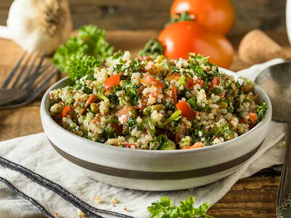
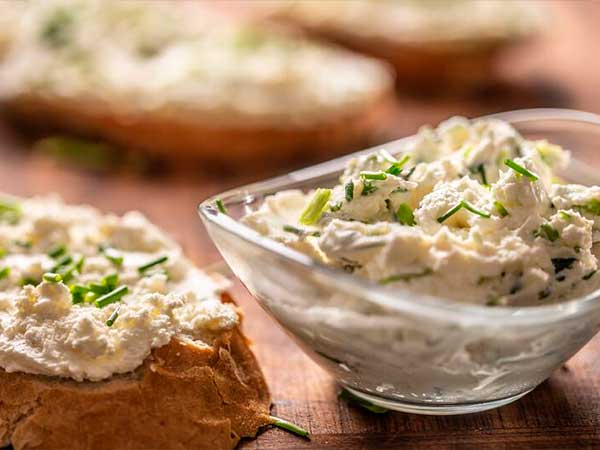

Tabule
Ingredientes
- 1 bol mediano de trigo germinado en tres días.
- 2 tomates cortados en cubos bien chiquitos.
- 1 pepino pequeño cortados en dados.
- 1 pimiento rojo picado.
- 1 cebolla picada.
- 2 dientes de ajo picados.
- 1 puñado de aceitunas negras.
- 2 cucharadas de semillas de girasol germinadas.
- Jugo de 2 limones.
- 1 cucharada de semillas de girasol germinadas.
- 1 cucharada de menta fresca picada.
- 2 cucharadas de aceite de oliva.
- Sal sin refinar.
Preparación
Mezclar todos los ingredientes. Dejar un par de horas en la heladera antes de servir. También se puede preparar con trigo burgol precocido.

Queso blanco a las finas hierbas
Ingredientes
- 200 gramos de queso blanco.
- 1 taza de alfalfa germinada.
- 1 cucharada de ciboulette picada.
- 1 cucharada de perejil picado.
- 1 diente de ajo picado.
- 1 cucharadita de té de albahaca picada.
Preparación
Mezclar todo bien. Se puede usar como aderezo o para picadas.